Theoretical physics · Quantum information & computation Lattice gauge theory
Raghav
GovindJha
Assistant Research scholar in the Physics department at NC State University.
NC State University (2025-). Previously Jefferson Lab (2022–2025) and Perimeter Institute (2019–2022). PhD, Syracuse University (2019).
Google Scholar · ORCiD · GitHub · Twitter · iNSPIRE-HEP
About
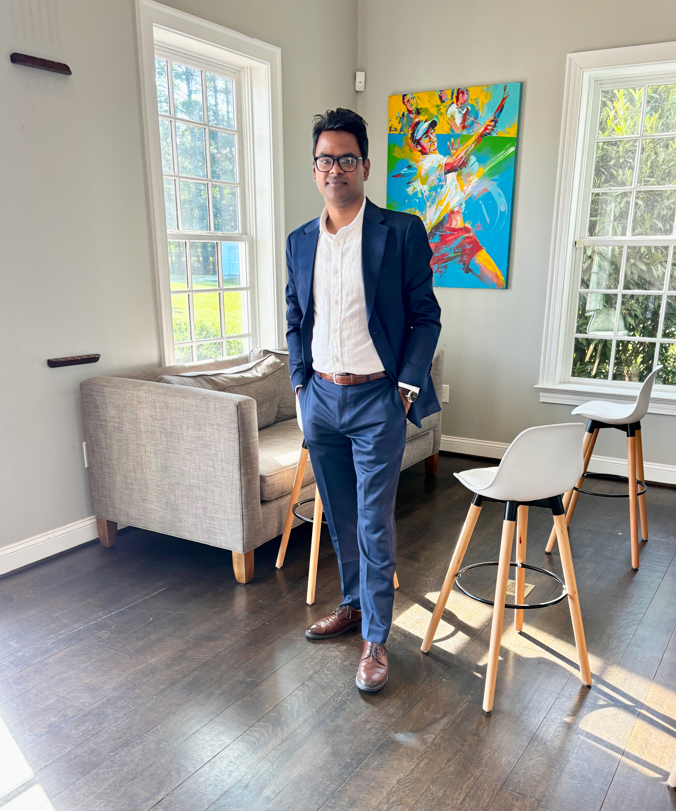
Hello! I am assistant research scholar in the Physics department at NC State University, working on a wide range of problems in theoretical physics with Lex Kemper, Bojko Bakalov, and Yuan Liu, funded by a DOE project.
Before starting this position in September 2025, I was at Jefferson Lab for three years as postdoctoral researcher working on various aspects of quantum computing, utilizing both qubit-based and qumode-based approaches to universal quantum computing. My research advisor at Jefferson Lab was Robert Edwards, an expert in hadron spectroscopy and computational physics.
Before coming to Jefferson Lab, I spent three years at the Perimeter Institute for Theoretical Physics in Waterloo, Canada, where I worked under the guidance of Pedro Vieira and Guifre Vidal as postdoctoral researcher partially funded by Simons Foundation. I completed my Ph.D. from Syracuse University in May 2019, advised by Simon Catterall. My thesis explored problems in lattice field theory based on Monte Carlo simulations, especially its application to the thermodynamics of black holes in supergravity through the gauge/gravity duality.
I grew up in different states of India (Darbhanga, Bihar, during 1993–1999; Delhi from 1999 until 2001; and Sonipat, Haryana, from 2001 until 2007) and studied for my bachelor's degree in physics at St. Stephen's College, Delhi while being a KVPY (funded by the Department of Science and Technology, Government of India) scholar. In 2010, I received a one-year Erasmus scholarship from the European Union to study for an MS at the University of Paris-6 (now Sorbonne Université), writing my thesis on trilayer graphene using ab initio density functional theory calculations. I then moved back to India and completed another MS in astroparticle physics from Bose Institute and St. Xavier's College (2011–2013), with thesis research on Monte Carlo methods for the path integral approach to quantum field theories. The Government of India awarded me the CSIR/UGC fellowship in my final year of MSc, which I had to decline since I moved to the US for my PhD in 2013.
Research
If you would like to work on a research project, please contact me. Until I get a faculty position, I cannot write a reference letter for any of your future applications. If you are still interested, I'd love to talk and discuss potential projects. I am interested in various problems related to lattice gauge theory, tensor networks, discrete and continuous variable approaches to quantum computing, machine learning such as RBM, matrix models, computational complexity theory, variational algorithms like conventional VQE and d-sparse VQE, Hamiltonian simulation, and quantum chaos. If you would rather work on your own problem/project with me, I would be even more excited to learn and work with you. Please email me at raghavgjha@zohomail.com or raghav.govind.jha@gmail.com.
My work right now centers on near-term quantum devices and the application of quantum computation to quantum many-body problems, together with machine learning approaches in physics such as neural quantum states (NQS). I am interested in how far available and early fault-tolerant hardware can be pushed for problems in field theory and many-body physics, and in the classical methods — tensor networks and learning-based ansätze — that complement them. For those interested in quantum computing, I wrote a small review a few years ago — on arXiv here — based on lectures given at the RPI Summer School (June 2022), the Hampton University Graduate Studies (HUGS) program, and the Quantum Computing Bootcamp at Jefferson Lab (June 2023). I highly recommend the notes (also an upcoming book published by Cambridge University Press) by John Preskill, here.
Alongside this, I continue to develop tensor network renormalization group methods for lower-dimensional gauge theories and spin models with continuous or discrete symmetries. Because these methods become computationally expensive in higher dimensions, much of my interest is in algorithms that extend their reach to a wide range of statistical models with sufficient accuracy. A long-term goal is to compute critical exponents in 3d models by approaching the QFT limit and comparing against the conformal bootstrap program and Monte Carlo methods. A related direction is to study models afflicted by the sign problem in conventional Monte Carlo — for instance at finite chemical potential or with a topological term (complex Euclidean action).
This builds on my earlier work: in my PhD I focused on supersymmetric gauge theories as non-perturbative formulations of string theory through gauge/gravity duality, especially finite-temperature maximally supersymmetric gauge theories studied with Monte Carlo methods to test and understand non-extremal black p-branes in dual supergravity — a numerical route to non-trivial checks of the AdS/CFT conjecture and to exploring away from the classical supergravity and planar limits. It was during that time that I began working with tensor network methods, which have remained central to my research since.
Publications
Last updated: 03 August 2026. Please check iNSPIRE-HEP for the most up-to-date list. Top ten papers with short descriptions: PDF. All papers title and BIB as a single file: PDF. Charts: papers per year · citations per paper · authors per paper · month-wise.
- Efficient computation of real-time correlators using Pauli Propagation (arXiv)
- Ground state preparation of random all-to-all Hamiltonians using ADAPT-VQE (arXiv)
- Magic and entanglement in 1+1-dimensional SU(2) lattice gauge theory (arXiv)
- Quantum simulation of massive Thirring and Gross–Neveu models for arbitrary number of flavors ( Phys.Rev.D. )
- Tensor renormalization group approach to critical phenomena via symmetry-twisted partition functions ( Phys.Rev.D )
- Hybrid continuous-discrete-variable quantum computing: a guide to utility (arXiv)
- On Ising model in magnetic field on the lattice (arXiv)
- Finite-temperature phase diagram of the Berenstein-Maldacena-Nastase matrix model on the lattice ( Phys.Rev.D )
- Real-Time Scattering in Ising Field Theory using Matrix Product States ( Phys.Rev.Research )
- Quantum computation of SU(2) lattice gauge theory with continuous variables ( JHEP )
- Sparsity dependence of Krylov state complexity in the SYK model ( Phys.Rev.D )
- Thermal state preparation of the SYK model using a variational quantum algorithm (arXiv)
- SU(2) principal chiral model with tensor renormalization group on a cubic lattice ( Phys.Rev.D )
- Phase diagram of generalized XY model using tensor renormalization group ( Phys.Rev.D )
- Hamiltonian simulation of minimal holographic sparsified SYK model ( Nucl.Phys.B )
- Tensor renormalization group study of 3D principal chiral model ( POS )
- Nonperturbative phase diagram of two-dimensional $\mathcal{N} = (2,2)$ super-Yang-Mills theory ( Phys.Rev.D )
- Sachdev-Ye-Kitaev model on a noisy quantum computer ( Phys.Rev.D )
- Continuous variable quantum computation of the O(3) model in 1+1 dimensions ( Phys.Rev.A )
- Quantum computations of the O(3) model using qumodes (arXiv) ( POS )
- GPU-Acceleration of Tensor Renormalization with PyTorch using CUDA (arXiv) ( Computer Phys. Comm. )
- Notes on Quantum Computation and Information (arXiv)
- Supersymmetric Wilson loops on the lattice in the large $N$ limit (EPJST)
- Non-perturbative phase structure of the bosonic BMN matrix model (arXiv) ( JHEP )
- Thermal phase structure of dimensionally reduced super-Yang--Mills (arXiv) (POS)
- Tensor renormalization of three-dimensional Potts model (arXiv)
- Introduction to Monte Carlo for Matrix Models (arXiv) (SciPost Lecture Notes)
- Large-$N$ limit of two-dimensional Yang--Mills theory with four supercharges (arXiv) (POS)
- Tensor renormalization group study of the 3d O(2) model (arXiv) (Phys. Rev. D)
- Three-dimensional super-Yang-Mills theory on the lattice and dual black branes (arXiv) (Phys. Rev. D)
- Positive geometries for all scalar theories from twisted intersection theory (arXiv) (Phys. Rev. Research)
- Critical analysis of two-dimensional classical XY model using tensor renormalization group (arXiv) (JSTAT)
- Thermal phase structure of a supersymmetric matrix model (arXiv) ( POS )
- Finite $N$ unitary matrix models (arXiv)
- Tensor renormalization group study of the non-Abelian Higgs model in two dimensions (arXiv) (Phys. Rev. D)
- Lattice quantum gravity with scalar fields (arXiv) (POS)
- The properties of D1-branes from lattice super-Yang-Mills theory using gauge/gravity duality (arXiv) (POS)
- On the removal of the trace mode in lattice $\mathcal{N} = 4$ super Yang-Mills theory (arXiv) (Phys. Rev. D)
- Nonperturbative study of dynamical SUSY breaking in $\mathcal{N} = (2,2)$ Yang-Mills theory (arXiv) (Phys. Rev. D)
- Truncation of lattice $\mathcal{N} = 4$ super Yang-Mills ( EPJC )
- Testing the holographic principle using lattice simulations (arXiv) ( EPJC )
- Testing holography using the lattice with super-Yang-Mills theory on a 2-torus (arXiv) (Phys. Rev. D)
Talks
Last updated: August 2026.
- Probing magic and entanglement in 1+1-dimensional SU(2) Hamiltonian lattice gauge theory, Lattice 2026, University of Maryland, MD, USA -- July 28, 2026
- Quantum computation of massive four-fermion models in 1+1- dimensions for arbitrary flavor number, APS Global Summit, Denver, CO, USA -- March 18, 2026
- Classical and quantum computing for problems in physics Illinois State University, Normal, IL, USA -- February 02, 2026
- From qubits and qumodes to quantum fields: quantum information for quantum field theory Lawrence Berkeley Lab, Berkeley, CA, USA -- December 01, 2025
- Quantum computation of random Hamiltonians Hybrid CV/DV Retreat Meeting, Friday Institute, NC State University, Raleigh, NC, USA October 13, 2025
- Quantum gravity on noisy quantum computers APS Global Summit, Anaheim, CA, USA March 17, 2025
- Probing Fundamental Physics in the Age of Quantum Information Processing, Tennessee Knoxville, USA March 13, 2025
- Real-time scattering in Ising field theory Brookhaven National Laboratory, Upton, NY, February 13, 2025
- Krylov complexity for quantum chaos on quantum computer, CFNS Workshop, Stony Brook University, NY, USA February 12, 2025
- Scattering in Ising field theory UC Berkeley/LBNL Nuclear Theory Seminar, Berkeley, CA, USA [Online] January 29, 2025
- Probing fundamental physics in a new era of computation University of Miami, USA January 22, 2025
- State preparation and operator growth of SYK model on IBM quantum computer (November 17, 2024) - Tensor Network 2024 workshop, Ishikawa, Japan [Online]
- Thermal state preparation and dynamics of random all-to-all fermionic model (July 17, 2024) - Talk at Massachusetts Institute of Technology (MIT), C2QA meeting, Boston, USA
- Introduction to tensor networks (29-30 April, 2 May 2024) - University of Pretoria, South Africa
- Quantum computing for quantum many-body systems (17 April, 2024) - William & Mary, VA, USA
- Approaches to universal quantum computing for spin and gauge models (16 April, 2024) - University of Iowa
- Random dense Hamiltonians on current noisy quantum computers (28 March, 2024) - University of Maryland
- Extracting some Physics with IBM's 127-qubit quantum processor (13 March, 2024) - Jefferson Lab
- Real-time dynamics of SYK model on a noisy quantum computer (05 March, 2024) - Workshop on 'Toward quantum simulation of gauge/gravity duality and lattice gauge theory', Queen Mary University of London (Online) (PDF)
- SYK model on a noisy quantum computer (06 February, 2024) - Indian Institute of Science (IISc), Bangalore, India (PDF)
- Quantum Computation of the O(3) model using qumodes (02 August, 2023) - Lattice 2023, Fermilab, USA
- Computation with Quantum Mechanics (June 20, 2023) - Set of two lectures at Quantum Computation Bootcamp, Jefferson Lab, USA
- Can quantum computation improve our understanding of quantum fields? (June 7, 2023) - Set of two lectures at HUGS 2023 Summer School, Jefferson Lab, USA
- Non-linear sigma models using quantum computation (May 30, 2023) at C2QA Meeting, New York City, USA
- Introduction to Quantum Computing methods in Physics (April 27, 2023) at Tata Institute, Mumbai, India (Online) (PDF)
- Aspects of Classical and Quantum Computing of Quantum Many-Body Systems (February 10, 2023) at Ashoka University (Online) (PDF)
- Classical computation using tensor networks and quantum computation with qubits and qumodes (November 14, 2022) at Jefferson Lab, USA
- Application of tensor methods to real-space renormalization and real-time study of field theories (October 31, 2022) at Brookhaven National Lab, USA (Online)
- New tools for old problems in spin and gauge models on the lattice (October 12, 2022) at IIT Hyderabad, India (Online)
- Some old problems on the lattice using tensors (August 26, 2022) at NUMSTRINGS 2022 conference at ICTS, India
- Introduction to Quantum Computation using QISKIT (June 21 and 22, 2022) at Rensselaer Polytechnic Institute, Troy, USA (Online)
- New approach to continuous spin models in two and three dimensions (May 17, 2022) at APTCP, Pohang, South Korea (Online)
- Holography with large matrices on the lattice (March 24, 2022) at UNAM, Mexico City, Mexico
- Large N matrix models using Monte Carlo and Bootstrap (February 22, 2022) at University of Surrey, UK (Online)
- Introduction to tensor networks and spin systems (January 11, 2022) at Azim Premji University, Bengaluru, India (Online)
- Tensor networks and spin models (December 7, 2021) - at Indian Institute of Science Education and Research (IISER), Mohali, India (Online) (PDF)
- Real-space tensor renormalization for spin models in three dimensions - November 19, 2021 at Perimeter Institute
- Solving matrix models at large and finite N (June 28 and 29, 2021) - Two lectures for Summer School 2021 at Rensselaer Polytechnic Institute, USA (Online due to COVID-19 pandemic) (PDF)
- Holographic gauge theories on the lattice - June 23, 2021 at Dublin Institute for Advanced Studies, Dublin, Ireland (Online via Zoom due to COVID-19 pandemic) (PDF)
- Old and new methods for new and old problems in Physics - March 8, 2021 at Indian Institute of Technology (IIT) Madras (Online via Zoom due to COVID-19 pandemic) (PDF)
- Probing holographic dualities with lattice supersymmetric Yang-Mills theories - February 25, 2021 at Massachusetts Institute of Technology (Online via Zoom due to COVID-19 pandemic) (PDF) (YouTube)
- New tool for old problems — Tensor network approach to spin models and gauge theories - October 14, 2020 at University of Liverpool, UK (Online via Zoom due to COVID-19 pandemic) (PDF)
- Tensor Networks: Algorithm & Applications — June 10 and 11, 2020 – Two lectures [1.5 hours each] for CyberTraining Summer School 2020 at Rensselaer Polytechnic Institute, USA (Online due to COVID-19 pandemic) (PDF)
- Holographic aspects of supersymmetric gauge theories – October 4, 2019 - Perimeter Institute
- Numerical Approaches to Holography — August 28, 2019 - Seminar at Ashoka University, Sonipat, India (PDF)
- Numerical Approaches to Holography — August 08, 2019 - Seminar at Indian Institute of Science Education and Research (IISER), Mohali, India
- Holography, large $N$, and supersymmetry on the lattice — April 02, 2019 - Ph.D. thesis defense (PDF)
- Fundamentals of Quantum Entropy — March 29, 2019
- Holographic dualities and tensor renormalization group study of gauge theories — March 11, 2019 - Interdisciplinary Quantum Fields and Strings + Tensor Networks Initiative invited talk at Perimeter Institute (PDF) (PIRSA)
- Matrix Models — December 7, 2018 - Theory HEP Group talk at Syracuse University
- Lattice gravity and scalar fields — July 23, 2018 at Annual Lattice Conference 2018, Michigan, USA (PDF)
- Supersymmetry breaking and gauge/gravity duality on the lattice — April 06, 2018 - Lattice beyond Standard Model 2018 at UC Boulder, Colorado (PDF)
- Large $N$ gauge theories — March 09, 2018 - Theory HEP Group talk at Syracuse University
- Recent results from lattice supersymmetry in $2 \le d < 4$ dimensions — January 31, 2018 - NUMSTRINGS I conference at ICTS, Bangalore (PDF) (YouTube)
- Testing gauge/gravity duality using lattice simulations — July 22, 2017 at Annual Lattice Conference 2017 , Granada, Spain (PDF)
- Testing holography through lattice simulations — April 04, 2017 at Quantum Gravity, String theory, and Holography conference at Yukawa Institute for Theoretical Physics, Kyoto, Japan (PDF)
- Maximally supersymmetric Yang-Mills and dual gravitational theories — October 07, 2016 - Theory HEP Group talk at Syracuse University
- Supersymmetry on the lattice — April 17, 2016 at the APS 2016 Meeting, Salt Lake City, Utah, USA
- Lattice studies of $ \mathcal{N} = (8,8)$ SYM - April 08, 2016 — Theory HEP Group talk at Syracuse University
Notes and learning resources
- Notes on path integral approach to quantum mechanics due to Dirac/Feynman (read here, last updated: May 2013)
- Short introduction to large N limit of gauge theories (read here, last updated: November 2017)
- Introduction to Quantum Computing ( Check on arXiv )
- Short review on holographic matrix models + fuzzy spheres (read here, last updated: December 2018)
- Some scratch notes on Machine Learning (read here)
- Some notes on topological field theory (TFT) (read here, last updated: April 2015)
- A brief review of lattice supersymmetry (read here, last updated: December 2014)
- Note on SUSY quantum mechanics (read here, last updated: August 2014)
- Short note on ABJM integrability and 3d SYM (read here, September 2019)
- Collection of important toy models in physics (read here, last updated: June 2025)
- Tensor network lectures at RPI Summer School (using Python) (read here, last updated: June 2020)
- Some worked out QFT problems in five parts from PhD days (circa 2015) (1, 2, 3, 4, 5, 6)
ML stuff
I am also interested in machine learning (and data analytics), and my current research explores questions regarding the application of ML to problems in quantum physics. Here is a small collection of non-physics sample projects I have done — more on GitHub.
EDA and data visualization
Exploratory Data Analysis is the process of retrieving, processing, and "knowing" the data. The first figure comes from an analysis of my own flight routes since 2009 — most of those 14 years were spent traveling between India and where I did my PhD (New York) and postdoc (Toronto). The next shows about 1200 years of data predicting the day the cherry blossoms in Kyoto, Japan, inspired by a paper studying the effect of global warming on this annual event. The last compares statistical measures — accuracy, F1 score, precision, recall — across different algorithms. I mostly use Matplotlib, Plotly, and Seaborn, on Jupyter, Google Colab, or GCP.
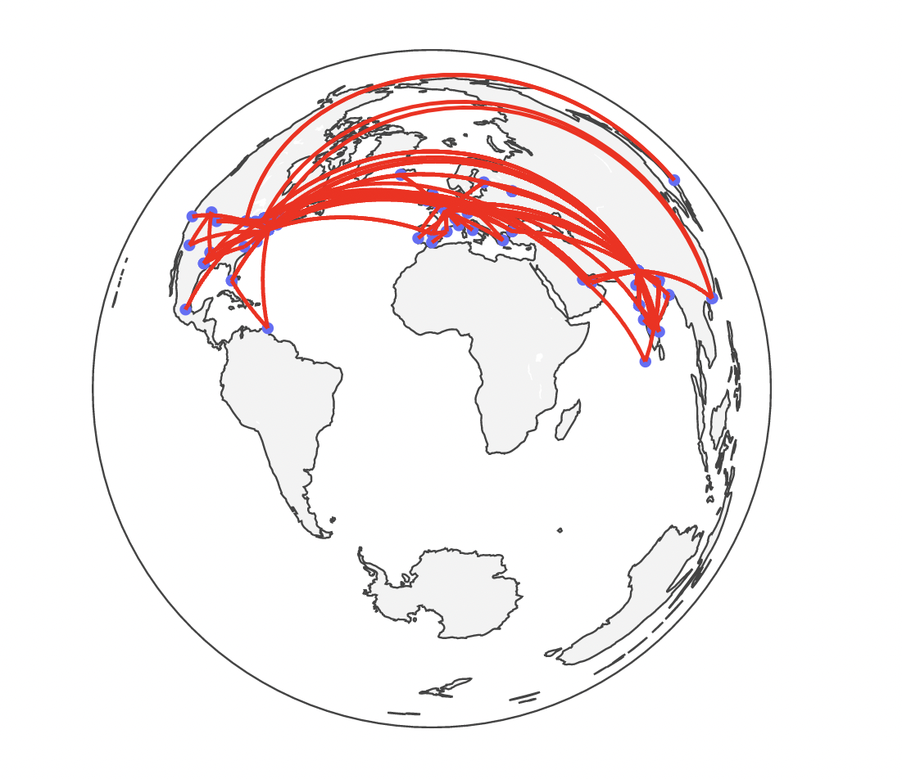
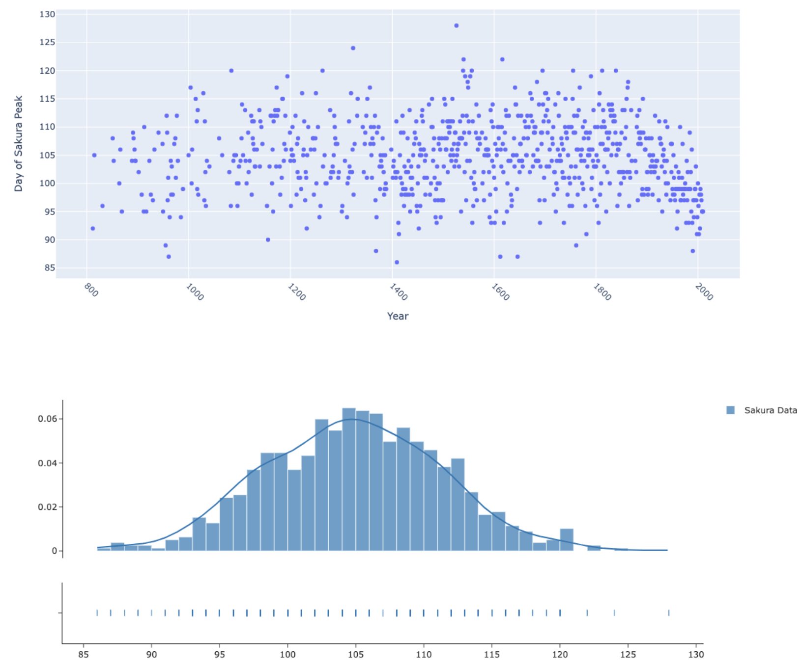
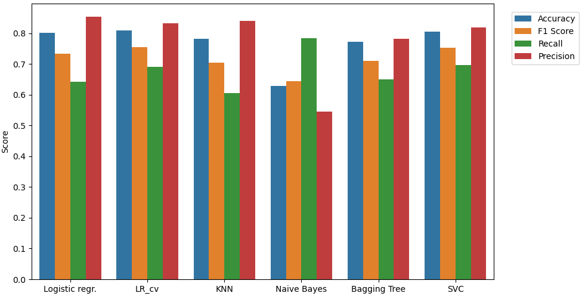
Natural language processing
NLP is the field of data science related to the analysis of text and speech. Below, a snapshot of a project determining whether a message is spam — cleaning data through punctuation removal, stop words, stemming/lemmatization, and tokenization using NLTK and spaCy — and a word cloud of quantum physics papers from the 1990s, built from the arXiv dataset: a short project to bring out the physicist in me.
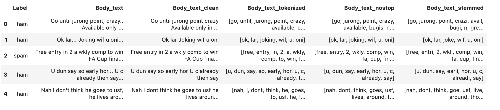
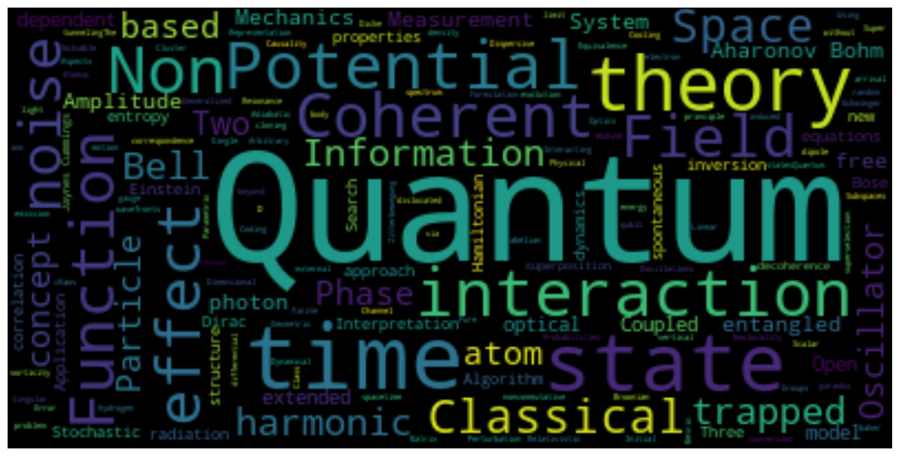
Unsupervised and deep learning
One of the most popular unsupervised algorithms is k-means clustering — grouping data points into distinct non-overlapping subgroups, useful for problems like customer segmentation. The first figure shows a five-cluster example for mall customer spending; the choice of k matters, and the elbow method helps make it. The second shows the classic LeNet convolutional architecture — repeating convolution and pooling layers before the dense layer — identifying a hand-drawn "8". The last classifies the single-channel fashion dataset with deep learning models in PyTorch.
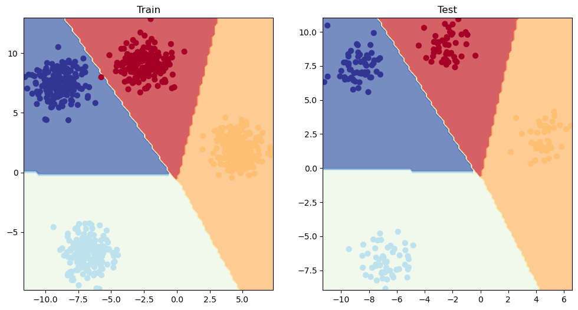
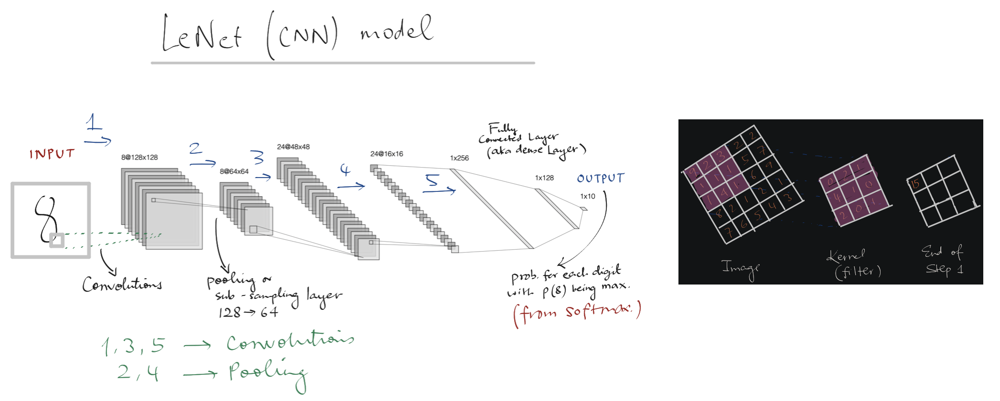
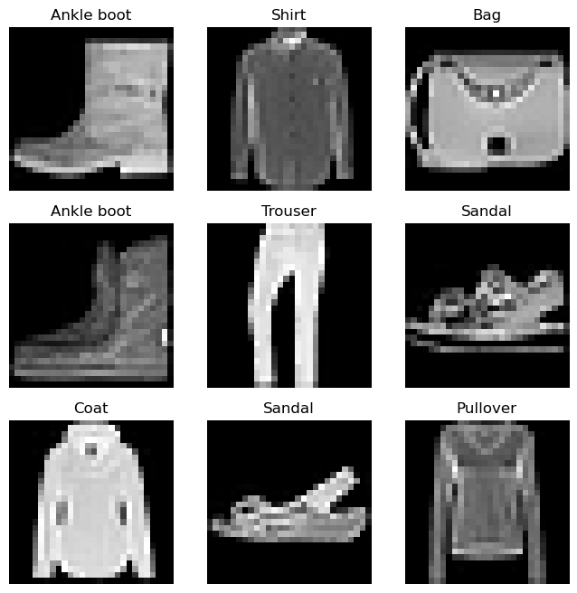
Around the world
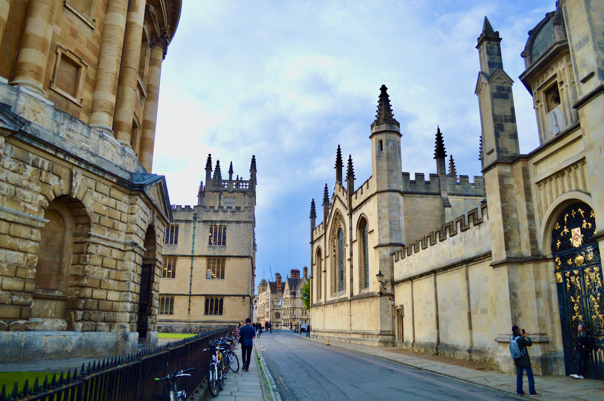
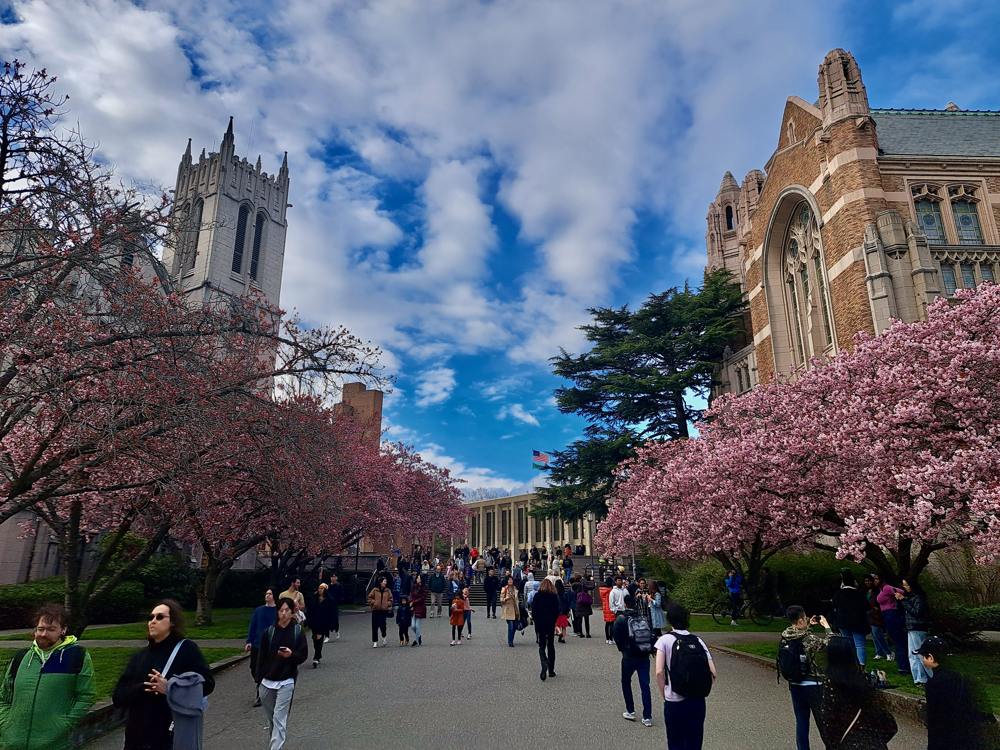